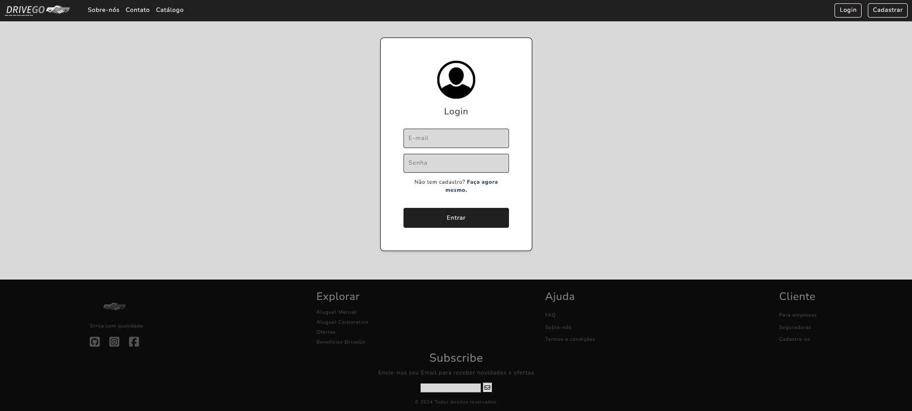
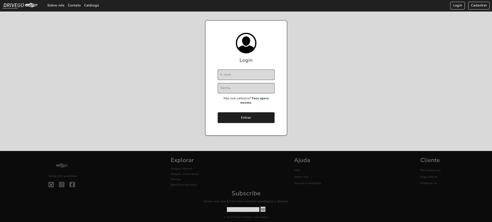
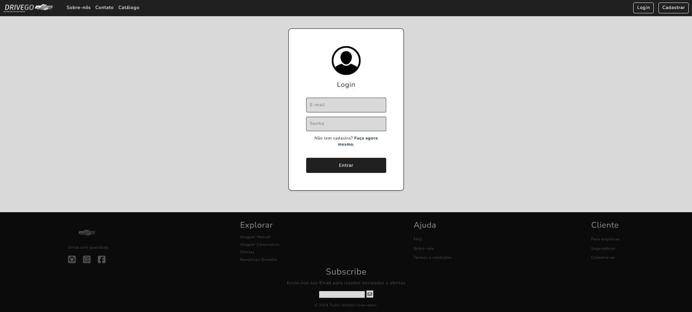

🚗 Projeto: DriveGo - Locadora de VeÃculos
Site responsivo criado com HTML e CSS, com múltiplas páginas, catálogo e formulário simulando o processo de aluguel de carros.
 


23 anos • Minas Gerais
Curso: Análise e Desenvolvimento de Sistemas
Linguagens: Python • Frontend • Automações • Cybersecurity
Site responsivo criado com HTML e CSS, com múltiplas páginas, catálogo e formulário simulando o processo de aluguel de carros.
